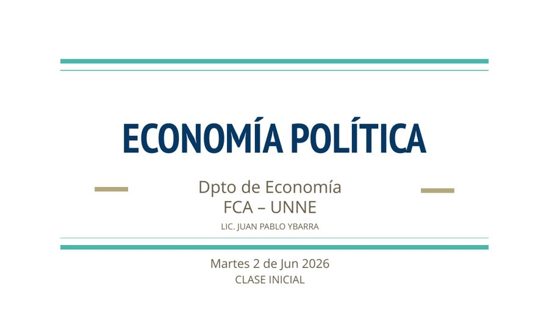
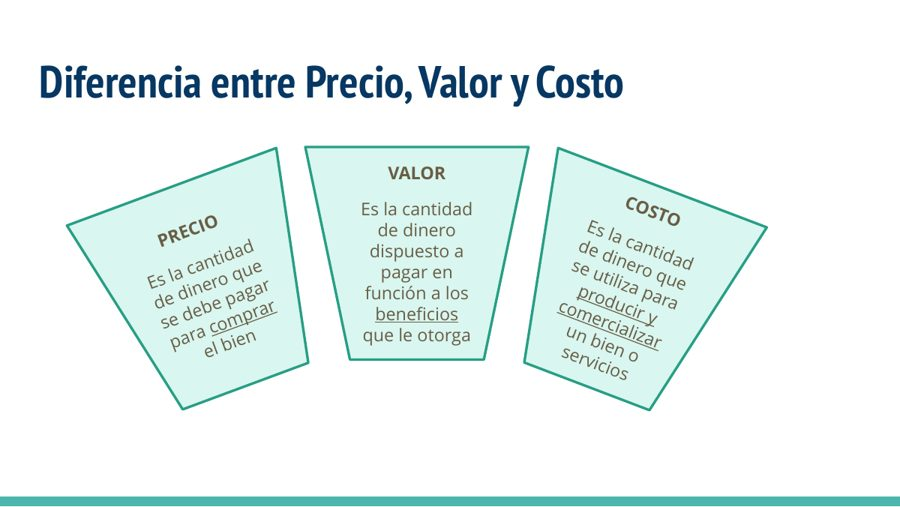
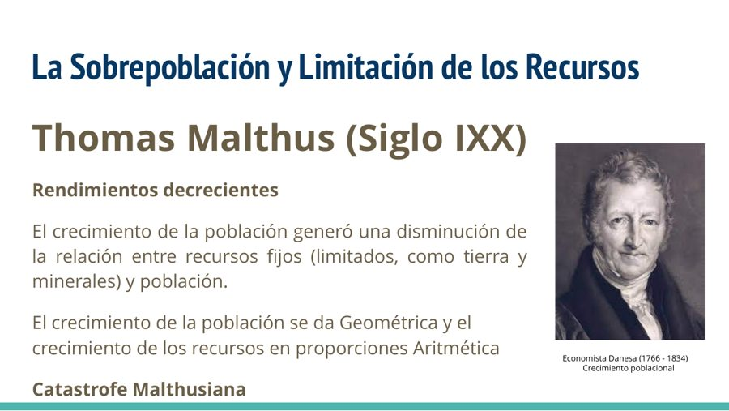
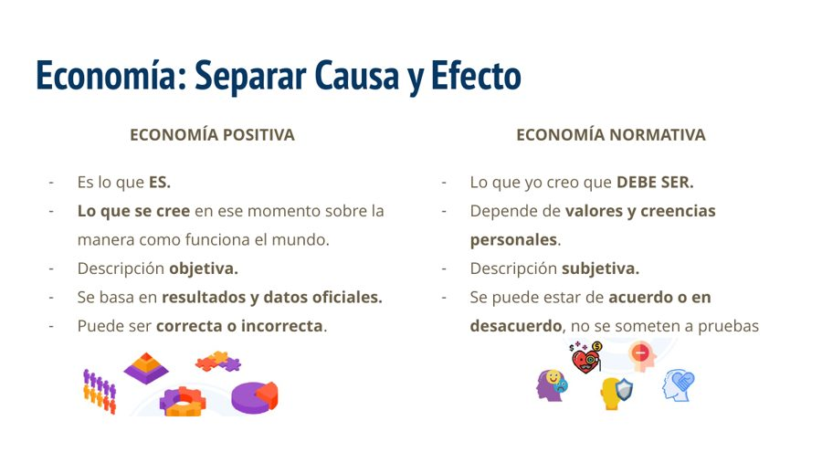

Juan Pablo Ybarra
Lic. en Economía · Mgs. en Finanzas
FCA · UNNE · Departamento de Economía
Clase inicial para ordenar reglas de cursado, cronograma, equipo docente y los primeros conceptos de análisis económico.

Cátedra
Una propuesta de trabajo centrada en teoría, práctica, lectura de actualidad y aplicación al campo agronómico.
Lic. en Economía · Mgs. en Finanzas
Lic. en Economía · Mgs. en Economía y Desarrollo
Lic. en Administración · Mgs. en Empresas Familiares
Ing. Agrónomo · Mgs. en Agronegocios y Alimentos · Mgs. of Science
Ayudante alumno
Propósito
El objetivo ideal de la cátedra es reemplazar las “charlas de café” por argumentos, datos, conceptos y modelos que permitan interpretar mejor los problemas económicos.
Lo que se paga para comprar un bien.
Lo necesario para producir y comercializar.
Lo que se está dispuesto a pagar por los beneficios recibidos.
Organización
La materia combina encuentros sincrónicos, trabajo práctico, aula virtual y actividades complementarias.
16:30 a 17:45
Primera parte de la clase.
18:00 a 19:30
Traer calculadora.
18:00 a 19:30
Coordinación con Mecanización.
Modalidad asincrónica
PPT, guía de trabajos prácticos y resoluciones.
Primera parte
Segunda parte
Reglas de juego
Las condiciones quedan explicitadas desde el inicio para sostener criterios claros durante el cursado.
Aprobar los dos parciales con mínimo de 7 y cumplir 75% de asistencia.
Aprobar los dos parciales, con opción a un recuperatorio, con mínimo de 6 y cumplir 75% de asistencia.
Condición para quienes no cumplan los requisitos de promoción o regularidad.
Bibliografía
La lectura de actualidad ocupa un lugar central: permite conectar conceptos con hechos económicos concretos y debates públicos.
Explorar actualidad en Kiosko.net →Conceptos iniciales
La materia introduce una mirada económica aplicada a fenómenos productivos, sociales y territoriales.
La agronomía aporta a la generación sustentable de alimentos; la economía modeliza fenómenos con impacto social.

Tres conceptos cercanos, pero con funciones analíticas diferentes para entender decisiones económicas.

La discusión sobre escasez, productividad y tecnología permite revisar la definición tradicional de economía.

Separar “lo que es” de “lo que debería ser” ayuda a ordenar argumentos y evidencia.
Marco conceptual
Estudia saberes, teorías, pensamientos, modelos y relaciones entre producción e intercambio.
Aplica conceptos teóricos para modificar comportamientos mediante herramientas fiscales, monetarias, cambiarias y regulatorias.
Describe lo que es. Se apoya en datos, resultados y contrastación empírica.
Expresa lo que debería ser. Depende de valores, juicios y preferencias sociales.
Inicio de cursado
Este es el momento para consultar dudas, consensuar criterios y comenzar el trabajo con una base común.
Contactar a la cátedra